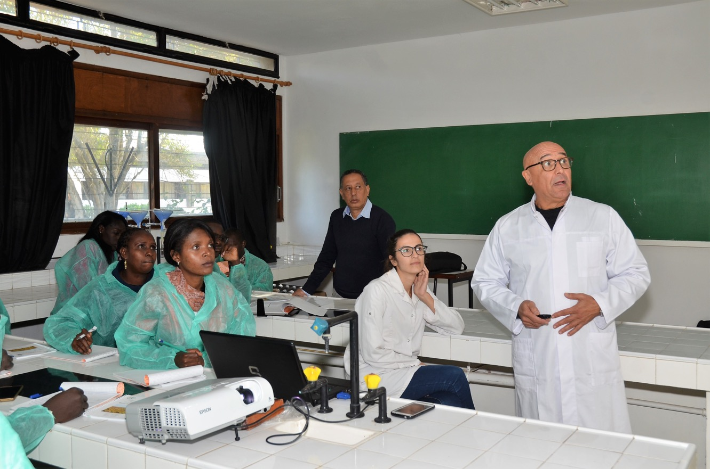
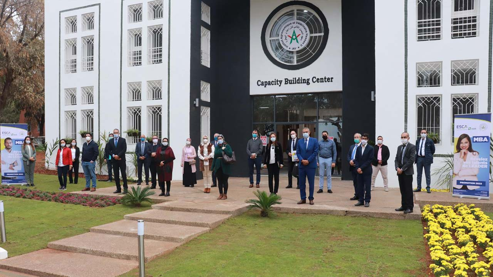

<!DOCTYPE html>
<html lang="en">
<head>
	<base target="_top">
	<meta charset="utf-8">
	<meta name="viewport" content="width=device-width, initial-scale=1">
	
	<title>Quick Start - Leaflet</title>
	
	<link rel="shortcut icon" type="image/x-icon" href="docs/images/favicon.ico" />

    <link rel="stylesheet" href="https://unpkg.com/leaflet@1.9.4/dist/leaflet.css" integrity="sha256-p4NxAoJBhIIN+hmNHrzRCf9tD/miZyoHS5obTRR9BMY=" crossorigin=""/>
    <script src="https://unpkg.com/leaflet@1.9.4/dist/leaflet.js" integrity="sha256-20nQCchB9co0qIjJZRGuk2/Z9VM+kNiyxNV1lvTlZBo=" crossorigin=""></script>

	<style>
		html, body {
			height: 100%;
			margin: 0;
		}
		.leaflet-container {
			height: 400px;
			width: 600px;
			max-width: 100%;
			max-height: 100%;
		}
	</style>

	
</head>
<body>


<div id="map" style="width: 600px; height: 400px;"></div>
<script>

	const map = L.map('map').setView([33.97687106860173, -6.865970031335423], 13);

	const tiles = L.tileLayer('https://tile.openstreetmap.org/{z}/{x}/{y}.png', {
		maxZoom: 19,
		attribution: '&copy; <a href="http://www.openstreetmap.org/copyright">OpenStreetMap</a>'
	}).addTo(map);

	const marker = L.marker([33.98047762787989, -6.8643992314994176]).addTo(map)
		.bindPopup('<b>IAV HASSAN II</b><br /> Rabat .').openPopup();

    const circle1 = L.circle([33.9765037681498, -6.866877585034622], {
		color: 'Green',
		fillColor: 'Green',
		fillOpacity: 0.5,
		radius: 5

	}).addTo(map).bindPopup('département topo .').openPopup();

	const polygon1 = L.polygon([
    [33.9754568895386, -6.866968630886314],
    [33.97533844578536, -6.866800322287453],
    [33.975247249543706, -6.86688816462391],
    [33.97536068875632, -6.867057814327144],
]).addTo(map).bindPopup('<b>AMPHI VETO </b><br>').openPopup();
;

	const circle = L.circle([33.97687106860173, -6.865970031335423], {
		color: 'red',
		fillColor: '#f03',
		fillOpacity: 0.5,
		radius: 5

	}).addTo(map).bindPopup('capacité building center.').openPopup();

	const polygon = L.polygon([
    [33.97707646765684, -6.865822970101926],
    [33.97698979228533, -6.866208107739896],
    [33.97666564722221, -6.866076534483554],
    [33.97678833189467, -6.865693620806544],
]).addTo(map).bindPopup('<b>capacité building center </b><br>');
;
    


	function onMapClick(e) {
		popup
			.setLatLng(e.latlng)
			.setContent(`You clicked the map at ${e.latlng.toString()}`)
			.openOn(map);
	}

	map.on('click', onMapClick);

</script>


</body>
</html>

